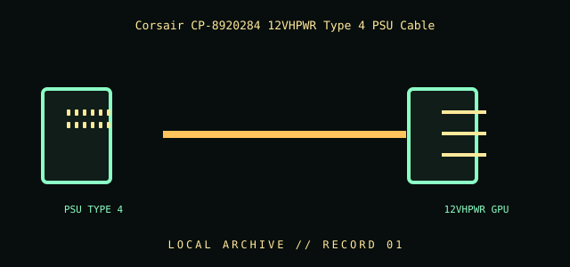

[ INDIVIDUAL COMPONENT // CABLES & ADAPTERS ]
Corsair CP-8920284 12VHPWR Type 4 PSU Cable
A Corsair modular-PSU accessory cable connecting a compatible Type 4 PSU output to a 12VHPWR graphics-card input. The PSU-side modular connector is manufacturer-specific; this is not a universal PCIe cable.

IDENTIFICATION / SAFETY: Match the complete part number, connector direction, host requirements, and revision to manufacturer documentation. A matching connector shape is not proof of protocol or electrical compatibility.
Specifications
| Catalog subcategory | Internal power cables |
|---|---|
| Catalog identity | Corsair CP-8920284 12VHPWR Type 4 PSU Power Cable |
| Protocol / standard | Corsair part number CP-8920284; Type 4 PSU-side connector to 12VHPWR GPU-side connector. Corsair lists this model for up to 600 W when used with supported Type 4 PSU models. |
| Connector ends | PSU TYPE 4 → 12VHPWR GPU; direction and gender are specified where the manufacturer source verifies them. |
Compatibility & electrical hazards
Use only with PSU models explicitly listed by Corsair for CP-8920284. The PSU-end wiring is proprietary: same-brand or physically fitting modular cables are not necessarily interchangeable. Never connect this cable to a different PSU family, an unlisted model, or a 12V-2x6/12VHPWR socket by visual assumption. Fully seat the GPU connector and keep the cable straight at the plug as directed by the component makers.
Archival & handling notes
Retain its exact CP-8920284 label and packaging; document the PSU model and revision with which it was acquired. Inspect connector seating, discoloration, damaged contacts, insulation, and bend stress. Do not cut, repin, or test an unknown modular harness by applying power.
For collection records, photograph both connector faces and all labels; record manufacturer, complete SKU, revision, provenance, condition, and the source document used for identification. Do not apply power to an unidentified or damaged cable.
Sources & further reading
- Corsair — 12VHPWR Type 4 PSU Power Cable (CP-8920284)Manufacturer model, supported PSU family, and power-use documentation; compatibility list takes precedence.
Source values are limited to the linked manufacturer or standards documentation. Features not stated there are intentionally left unspecified; confirm the exact cable revision and host-device manuals before use.